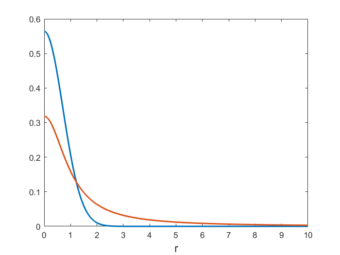

t-SNE, UMAP
Theory:
- L.J.P. van der Maaten and G.E. Hinton. Visualizing Data Using t-SNE. Journal of Machine Learning Research 9(Nov):2579-2605, 2008.
- McInnes, L, Healy, J, UMAP: Uniform Manifold Approximation and Projection for Dimension Reduction, ArXiv e-prints 1802.03426, 2018
Practical:
- Kobak & Berens. The art of using t-SNE for single-cell transcriptomics. Nat. Comm. 10:5416 (2019)
- Becht et al. Dimensionality reduction for visualizing single-cell data using UMAP
t-Stochastic Neighbor Embedding (t-SNE)
Linear dimensionality reduction methods (like PCA) may not able to retain both the local and global structure of the data in a single map.
t-SNE is a non-linear method that aims to overcome this limitation.
t-SNE is particularly successful at visualizing high-dimensional data (reducing it to two dimensions).
Care must be taken when applying t-SNE due to random initialization of the algorithm, which may lead to solutions that do not represent the global structure of the data well.
(Symmetric) Stochastic Neighbor Embedding (SNE)
As before, assume we have a set of \(N\) observations \(x_1,\dots,x_N\in \mathbb{R}^p\) of \(p\) variables, collected in the \(N\times p\) matrix \(\mathbf{X}\).
SNE introduces a directional similarity of \(x_j\) to \(x_i\),
\[ \begin{aligned} p_{j\mid i} = \frac{\exp\bigl(-\frac{1}{2\sigma_i^2}\|x_i-x_j\|^2\bigr)}{\sum_{k\neq i}\exp\bigl(-\frac{1}{2\sigma_i^2}\|x_i-x_k\|^2\bigr)} \end{aligned} \]
The variances \(\sigma_i\) are chosen such that the perplexities
\[ \begin{aligned} \mathcal{P_i} = \exp\Bigl(-\sum_{j\neq i} p_{j\mid i}\log p_{j\mid i}\Bigr) \end{aligned} \]
take some prespecified value.
Symmetric, undirectional similarities are defined as
\[ \begin{aligned} p_{ij} = \frac{p_{j\mid i}+p_{i\mid j}}{2n} \end{aligned} \]
such that \(\sum_{ij}p_{ij}=1\)
A map is a two or three-dimensional representation \({\cal Y}=\{y_1,\dots,y_N\}\) of the high-dimensional data \({\cal X}=\{x_1,\dots,x_N\}\).
In the low-dimensional representation, we define the probability of picking \(y_i\) and \(y_j\) as neighbors by
\[ \begin{aligned} q_{ij} = \frac{\exp\bigl(-\|y_i-y_j\|^2\bigr)}{\sum_{k\neq l}\exp\bigl(-\|y_k-y_l\|^2\bigr)} \end{aligned} \]
(Symmetric) Stochastic Neighbor Embedding (SNE) finds the map \({\cal Y}\) that minimizes the mismatch between \(p_{ij}\) and \(q_{ij}\), across all pairs \(i\) and \(j\).
The mismatch cost function is given by the Kullback-Leibler divergence:
\[ \begin{aligned} C = \sum_i \sum_j p_{ij} \log \frac{p_{ij}}{q_{ij}}\geq 0 \end{aligned} \]
with \(C=0\) if, and only if, \(q_{ij}=p_{ij}\) for all \(i\) and \(j\).
SNE suffers from a “crowding problem”
The volume of a sphere with radius \(r\) in \(p\) dimensions scales as \(r^p\).
Consider a cluster of datapoints that are approximately uniformly distributed in a sphere of radius \(r\).
If \(p\gg 2\), then the available 2-dimensional area to model the distances in this cluster accurately will be too small compared to the total area available, forcing clusters of nearby points to crush together.
Heavy-tails in the low-dimensional space resolve the crowding problem
A heavy-tail distribution in the low-dimensional space allows a moderate distance in the high-dimensional space to be faithfully modelled by a much larger distance in the map.
In t-SNE a Student t-distribution with 1 d.o.f. (a Cauchy distribution) is used as the heavy-tailed distribution in the low-dimensional map:
\[ \begin{aligned} q_{ij} = \frac{\left(1+\|y_i-y_j\|^2\right)^{-1}}{\sum_{k\neq l}\left(1+\|y_k-y_l\|^2\right)^{-1}} \end{aligned} \]
The Cauchy distribution offers additional advantages in the numerical optimization of the cost function.

Summary
t-SNE:
- puts emphasis on modelling dissimilar datapoints by means of large pairwise distances, and similar datapoints by small pairwise distances,
- offers dramatic improvement in finding and preserving local structure in the data, compared to, for instance, PCA.
Optimization of the t-SNE cost function is easier than optimizing earlier SNE versions, but:
- the cost function is non-convex,
- several optimization parameters need to be chosen,
- the constructed solutions depend on these choices and may be different each time t-SNE is run from an initial random configuration.
Formal theory supporting t-SNE is lacking:
- similarity measures and cost function are based on heuristics, appealing to “intuitive” justifications,
- there is no formal generative model connecting high- and low-dimensional representations,
- the probability semantics used to describe t-SNE is descriptive, rather than foundational.
Uniform Manifold Approximation and Projection (UMAP)
In the words of the authors:
- UMAPs design decisions were all grounded in a solid theoretic foundation and not derived through experimentation with any particular task focused objective function.
- The theoretical foundations for UMAP are largely based in manifold theory and topological data analysis.
- A purely computational view [of UMAP] fails to shed any light upon the reasoning that underlies the algorithmic decisions made in UMAP.
A computational view of UMAP
From a practical computational perspective, UMAP can be described in terms of, construction of, and operations on, weighted graphs:
- Graph construction:
- Construct a weighted k-neighbour graph
- Apply some transform on the edges to represent local distance.
- Deal with the inherent asymmetry of the k-neighbour graph.
- Graph layout:
- Define a cost function that preserves desired characteristics of this k-neighbour graph.
- Find a low dimensional representation which optimizes this cost function.
t-SNE and UMAP can both be cast in this form, but with some (subtle) differences in the edge weighting (dissimilarity measure) and graph layout (cost function).
A comparison of dimension reduction algorithms
See figure from the UMAP paper.
Practical recommendations
Claims of UMAP or t-SNE (or related methods) being superior are usually overrated.
Both algorithms suffer from a need for careful parameter tuning and initialization choices.
Using and understanding one algorithm well is more important flipping between algorithms and never changing default parameters.
An excellent reference for using t-SNE for single-cell data:
Kobak & Berens. The art of using t-SNE for single-cell transcriptomics. Nat. Comm. 10:5416 (2019)
See also: github.com/berenslab/rna-seq-tsne